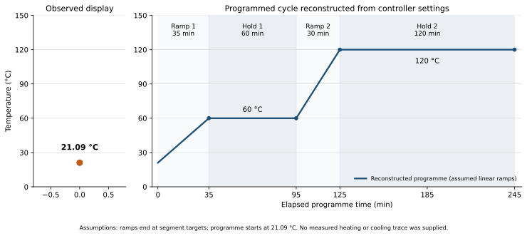

MECH2460 · Practical 4
Oven temperature plot
A reconstructed oven programme alongside the available pre-start temperature reading. Download the figure or run the original Python plotting code.

Programme settings
| Stage | Duration | Target |
|---|---|---|
| Ramp 1 | 35 min | 60 °C |
| Hold 1 | 60 min | 60 °C |
| Ramp 2 | 30 min | 120 °C |
| Hold 2 | 120 min | 120 °C |
Total programme: 245 min
Linear ramps and an initial programme temperature of 21.09 °C are reconstruction assumptions. No measured heating or cooling history was available.
Run the Python script
Use Python 3.9 or later. Download the source and requirements.txt, then run:
python3 -m pip install -r requirements.txt
python3 plot_oven_temperature.pyThe script exports PNG, PDF, SVG and programme CSV files into report_assets/.
To add real readings, use a CSV with time_min,temperature_C columns. Elapsed times must refer to a verified programme start.
python3 plot_oven_temperature.py \
--measured measured_temperature.csv